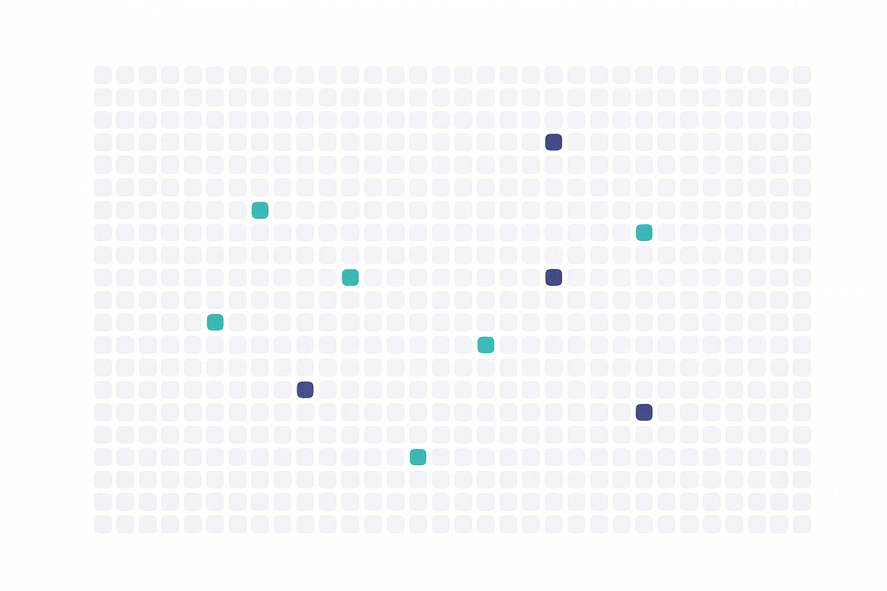

All results are founder-reported, single-seed in most domains, on public datasets with contamination caveats, and reproducible from the repository — not independently verified. That framing is binding on every artifact we publish.A6
| Domain | Result | Trials |
|---|---|---|
| EUR/USD signals | Sharpe +6.52 — raw, pre-deflation | 265+ |
| QQQ signals | Composite Sharpe +1.32 · PSR 0.997 | 216+ |
| Higgs classification | AUROC ≈ 0.8675+ | — |
| PathMNIST OOD | AUC 0.997 | — |
| Olivetti faces | Conditional ARI 0.874 | — |
| Fraud detection | AUC 0.6097 vs AutoGluon 0.522 / H2O 0.518 | — |
Removing the citation gate spiked invalid experiments 42% and produced 3 leakage incidents the gated arm did not. One task, one seed, founder-reported.
Attestation packs, BYO-endpoint, fingerprint refusal and the acceptance gate are roadmapROADMAP — named as such everywhere, never sold as shipped.

13,400 forks on the minimal loop — and no active maintainer since 2026-03-26.A1
Fourteen are hardware ports or translations; roughly one is a domain extension.A2
Documented data leakage in published, peer-reviewed work — the failure the gates exist to prevent.D5